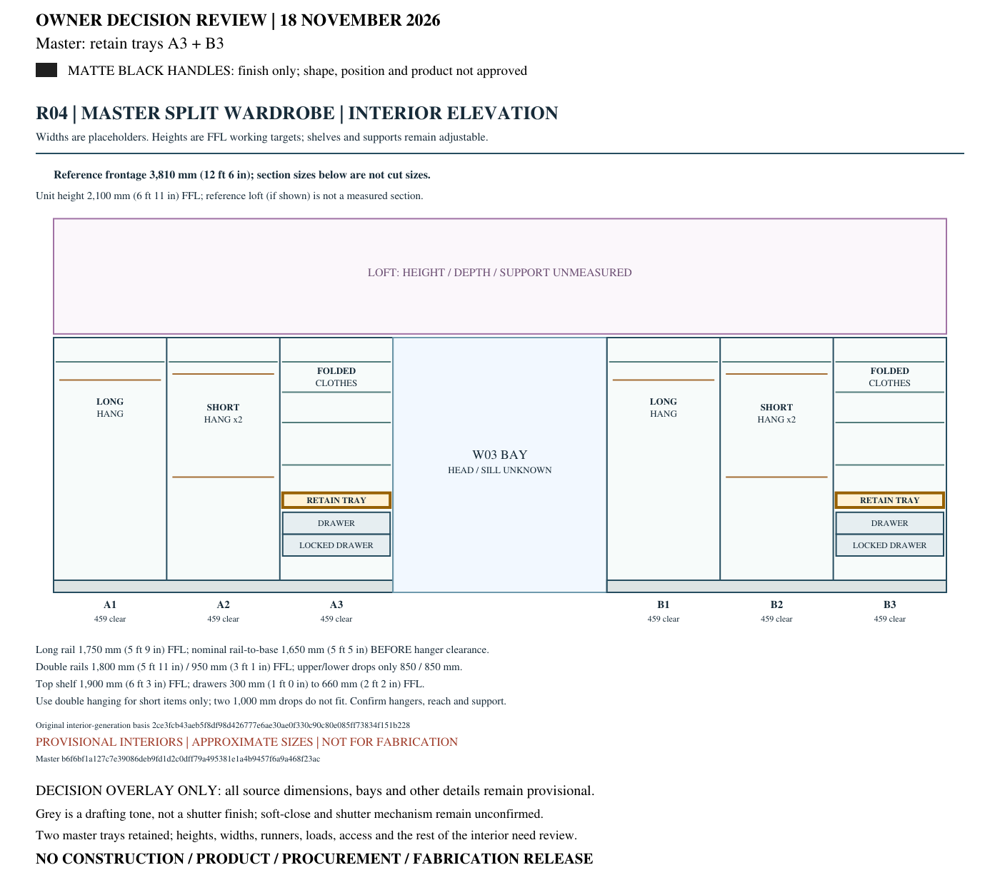
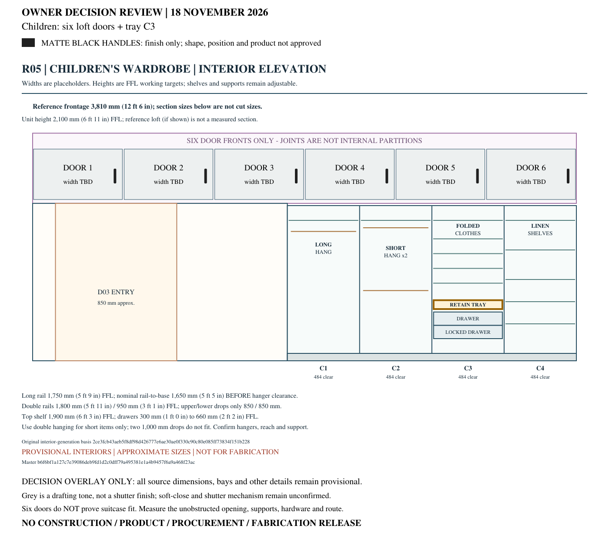

DESIGN REVIEW ONLY - NOT FOR FABRICATION. These separate overlays highlight the confirmed choices, not a regenerated design master or measured shop drawings. Interior dimensions, supports and remaining hardware are provisional. The earlier OPT-E matte-laminate material selection is retained; shutter mechanism, exact shade and site fit remain unconfirmed. Pooja finish and soft-close hardware are not confirmed.
Confirmed: matte-black handle finish, three retained trays (master A3 and B3, children's C3), six children's loft doors, and the earlier OPT-E matte-laminate material selection. Shutter mechanism and shade, plus handle shape, position and product, are not inferred. Grey door fronts are drafting tones, not an approved shutter finish or mechanism.
Download two-page review PDF / Full owner decision addendum and holds / Decision receipt.
The later wardrobe and granite-plinth visual (SVG) also shows the selected BWP carcass and granite plinth. Its section is schematic; construction details remain unverified.
Six doors alone do not prove large-suitcase clearance. Measure the largest suitcase including wheels and handles, the usable internals and insertion/removal route. Verify an unobstructed clear opening with doors open, hardware, dividers and structural supports in place. No support removal or final leaf size is approved.


The historical 17-page wardrobe pack, model, source SVGs, costs and renders retain their existing hashes. These dated overlay sheets and the separate plinth visual do not imply the older packs already include the new choices. Other rooms remain available in the provisional wardrobe pack.
The derivation receipt identifies original inputs and new output hashes. The local generator verifies source hashes and tray bays before creating the overlays. It does not change sources, validate site dimensions, recalculate costs or run lighting simulation.
The addendum and review overlays are separately versioned from the unchanged master-bound packs and are authorized for the repository's main branch/Pages. Publication does not release construction, products, procurement or fabrication.